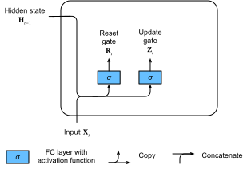

Gated Recurrent Units (GRU)
As RNNs and particularly the LSTM architecture (:numref:sec_lstm) rapidly gained popularity during the 2010s, a number of researchers began to experiment with simplified architectures in hopes of retaining the key idea of incorporating an internal state and multiplicative gating mechanisms but with the aim of speeding up computation. The gated recurrent unit (GRU) :cite:Cho.Van-Merrienboer.Bahdanau.ea.2014 offered a streamlined version of the LSTM memory cell that often achieves comparable performance but with the advantage of being faster to compute :cite:Chung.Gulcehre.Cho.ea.2014.
using Pkg; Pkg.activate("../../d2lai")
using d2lai
using Flux
using Plots
using CUDA, cuDNN Activating project at `/workspace/d2l-julia/d2lai`[ Info: Precompiling d2lai [749b8817-cd67-416c-8a57-830ea19f3cc4] (cache misses: include_dependency fsize change (2))
Reset Gate and Update Gate
Here, the LSTM's three gates are replaced by two: the reset gate and the update gate. As with LSTMs, these gates are given sigmoid activations, forcing their values to lie in the interval $(0, 1)$. Intuitively, the reset gate controls how much of the previous state we might still want to remember. Likewise, an update gate would allow us to control how much of the new state is just a copy of the old one. :numref:fig_gru_1 illustrates the inputs for both the reset and update gates in a GRU, given the input of the current time step and the hidden state of the previous time step. The outputs of the gates are given by two fully connected layers with a sigmoid activation function.
 :label:fig_gru_1
Mathematically, for a given time step $t$, suppose that the input is a minibatch $\mathbf{X}_t \in \mathbb{R}^{n \times d}$ (number of examples $=n$; number of inputs $=d$) and the hidden state of the previous time step is $\mathbf{H}_{t-1} \in \mathbb{R}^{n \times h}$ (number of hidden units $=h$). Then the reset gate $\mathbf{R}_t \in \mathbb{R}^{n \times h}$ and update gate $\mathbf{Z}_t \in \mathbb{R}^{n \times h}$ are computed as follows:
\[ \begin{aligned} \mathbf{R}_t = \sigma(\mathbf{X}_t \mathbf{W}_{\textrm{xr}} + \mathbf{H}_{t-1} \mathbf{W}_{\textrm{hr}} + \mathbf{b}_\textrm{r}),\\ \mathbf{Z}_t = \sigma(\mathbf{X}_t \mathbf{W}_{\textrm{xz}} + \mathbf{H}_{t-1} \mathbf{W}_{\textrm{hz}} + \mathbf{b}_\textrm{z}), \end{aligned} $$ where $\mathbf{W}_{\textrm{xr}}, \mathbf{W}_{\textrm{xz}} \in \mathbb{R}^{d \times h}$ and $\mathbf{W}_{\textrm{hr}}, \mathbf{W}_{\textrm{hz}} \in \mathbb{R}^{h \times h}$ are weight parameters and $\mathbf{b}_\textrm{r}, \mathbf{b}_\textrm{z} \in \mathbb{R}^{1 \times h}$ are bias parameters. ## Candidate Hidden State Next, we integrate the reset gate $\mathbf{R}_t$ with the regular updating mechanism in :eqref:`rnn_h_with_state`, leading to the following *candidate hidden state* $\tilde{\mathbf{H}}_t \in \mathbb{R}^{n \times h}$ at time step $t$: $$\tilde{\mathbf{H}}_t = \tanh(\mathbf{X}_t \mathbf{W}_{\textrm{xh}} + \left(\mathbf{R}_t \odot \mathbf{H}_{t-1}\right) \mathbf{W}_{\textrm{hh}} + \mathbf{b}_\textrm{h}),\]
:eqlabel:gru_tilde_H
where $\mathbf{W}_{\textrm{xh}} \in \mathbb{R}^{d \times h}$ and $\mathbf{W}_{\textrm{hh}} \in \mathbb{R}^{h \times h}$ are weight parameters, $\mathbf{b}_\textrm{h} \in \mathbb{R}^{1 \times h}$ is the bias, and the symbol $\odot$ is the Hadamard (elementwise) product operator. Here we use a tanh activation function.
The result is a candidate, since we still need to incorporate the action of the update gate. Comparing with :eqref:rnn_h_with_state, the influence of the previous states can now be reduced with the elementwise multiplication of $\mathbf{R}_t$ and $\mathbf{H}_{t-1}$ in :eqref:gru_tilde_H. Whenever the entries in the reset gate $\mathbf{R}_t$ are close to 1, we recover a vanilla RNN such as that in :eqref:rnn_h_with_state. For all entries of the reset gate $\mathbf{R}_t$ that are close to 0, the candidate hidden state is the result of an MLP with $\mathbf{X}_t$ as input. Any pre-existing hidden state is thus reset to defaults.
:numref:fig_gru_2 illustrates the computational flow after applying the reset gate.
 :label:
:label:fig_gru_2
Hidden State
Finally, we need to incorporate the effect of the update gate $\mathbf{Z}_t$. This determines the extent to which the new hidden state $\mathbf{H}_t \in \mathbb{R}^{n \times h}$ matches the old state $\mathbf{H}_{t-1}$ compared with how much it resembles the new candidate state $\tilde{\mathbf{H}}_t$. The update gate $\mathbf{Z}_t$ can be used for this purpose, simply by taking elementwise convex combinations of $\mathbf{H}_{t-1}$ and $\tilde{\mathbf{H}}_t$. This leads to the final update equation for the GRU:
\[\mathbf{H}_t = \mathbf{Z}_t \odot \mathbf{H}_{t-1} + (1 - \mathbf{Z}_t) \odot \tilde{\mathbf{H}}_t.\]
Whenever the update gate $\mathbf{Z}_t$ is close to 1, we simply retain the old state. In this case the information from $\mathbf{X}_t$ is ignored, effectively skipping time step $t$ in the dependency chain. By contrast, whenever $\mathbf{Z}_t$ is close to 0, the new latent state $\mathbf{H}_t$ approaches the candidate latent state $\tilde{\mathbf{H}}_t$. :numref:fig_gru_3 shows the computational flow after the update gate is in action.
 :label:
:label:fig_gru_3
In summary, GRUs have the following two distinguishing features:
- Reset gates help capture short-term dependencies in sequences.
- Update gates help capture long-term dependencies in sequences.
Implementation from Scratch
To gain a better understanding of the GRU model, let's implement it from scratch.
Initializing Model Parameters
The first step is to initialize the model parameters. We draw the weights from a Gaussian distribution with standard deviation to be sigma and set the bias to 0. The hyperparameter num_hiddens defines the number of hidden units. We instantiate all weights and biases relating to the update gate, the reset gate, and the candidate hidden state.
struct GRUScratch{W, A} <: AbstractModel
w::W
args::A
end
Flux.@layer GRUScratch trainable = (w,)
function GRUScratch(num_inputs::Int, num_hiddens::Int; sigma = 0.01)
init_weights() = randn(num_hiddens, num_inputs).*sigma, randn(num_hiddens, num_hiddens).*sigma, zeros(num_hiddens)
W_rx, W_rh, b_r = init_weights()
W_zx, W_zh, b_z = init_weights()
W_cx, W_ch, b_c = init_weights()
w = (
reset_gate = construct_nt_args(; W_rx, W_rh, b_r),
update_gate = construct_nt_args(; W_zx, W_zh, b_z),
input_node = construct_nt_args(; W_cx, W_ch, b_c)
)
args = construct_nt_args(; num_inputs, num_hiddens, sigma)
GRUScratch(w, args)
endGRUScratchDefining the Model
Now we are ready to define the GRU forward computation. Its structure is the same as that of the basic RNN cell, except that the update equations are more complex.
function (gru::GRUScratch)(x, state = nothing)
batchsize = size(x, 3)
device = isa(x, CuArray) ? gpu : cpu
H = if isnothing(state)
zeros(gru.args.num_hiddens, batchsize)
else
state
end |> device
outs = map(eachslice(x; dims = 2)) do x_
Rt = sigmoid.(gru.w.reset_gate.W_rx*x_ + gru.w.reset_gate.W_rh*H .+ gru.w.reset_gate.b_r)
Zt = sigmoid.(gru.w.update_gate.W_zx*x_ + gru.w.update_gate.W_zh*H .+ gru.w.update_gate.b_z)
H_tilde = tanh.(gru.w.input_node.W_cx*x_ + gru.w.input_node.W_ch*(H.*Rt) .+ gru.w.input_node.b_c)
H = Zt.*H + (1. .- Zt).*H_tilde
return H
end
outputs = stack(outs)
permutedims(outputs, [1,3,2]), H
end
Training
Training a language model on The Time Machine dataset works in exactly the same manner as in :numref:sec_rnn-scratch.
data = d2lai.TimeMachine(1024, 32) |> f64
num_hiddens = 32
gru = GRUScratch(length(data.vocab), num_hiddens)
model = RNNLMScratch(gru, length(data.vocab)) |> f64
opt = Flux.Optimiser(Descent(4.))
trainer = Trainer(model, data, opt; max_epochs = 50, gpu = true, gradient_clip_val = 1., board_yscale = :identity)
m, _ = d2lai.fit(trainer);┌ Warning: `Flux.Optimiser(...)` has been removed, please call `OptimiserChain(...)`, exported by Flux from Optimisers.jl
└ @ Flux ~/.julia/packages/Flux/3711C/src/deprecations.jl:123 [ Info: Train Loss: 3.2184242686567512, Val Loss: 3.2269960270582736
[ Info: Train Loss: 3.2454453056258905, Val Loss: 3.2233400344625514
[ Info: Train Loss: 2.8841355975958765, Val Loss: 2.8731194300592233
[ Info: Train Loss: 2.7898046894270685, Val Loss: 2.8037308224065485
[ Info: Train Loss: 2.5843870460540694, Val Loss: 2.6258695969145234
[ Info: Train Loss: 2.4063724115357905, Val Loss: 2.453611923331305
[ Info: Train Loss: 2.415416327292373, Val Loss: 2.506989562880749
[ Info: Train Loss: 2.404373422541069, Val Loss: 2.4955997954095204
[ Info: Train Loss: 2.2991540681521214, Val Loss: 2.4030741950456034
[ Info: Train Loss: 2.2380686502111518, Val Loss: 2.3496677874615557
[ Info: Train Loss: 2.2160344959783105, Val Loss: 2.3097102311222133
[ Info: Train Loss: 2.160869173837746, Val Loss: 2.29854513533635
[ Info: Train Loss: 2.077997974431826, Val Loss: 2.231138762367394
[ Info: Train Loss: 2.0833351048215807, Val Loss: 2.2593798571389896
[ Info: Train Loss: 2.0961769420094343, Val Loss: 2.27601532142624
[ Info: Train Loss: 2.0092783099523395, Val Loss: 2.2378415981662783
[ Info: Train Loss: 1.9441608566346948, Val Loss: 2.1914365297876035
[ Info: Train Loss: 1.9454186973462442, Val Loss: 2.1909205360976536
[ Info: Train Loss: 1.8724455107508904, Val Loss: 2.1654439758077233
[ Info: Train Loss: 1.844901557144545, Val Loss: 2.1182251459752157
[ Info: Train Loss: 1.8571493771608898, Val Loss: 2.1366166955629877
[ Info: Train Loss: 1.8059455275939191, Val Loss: 2.104911549191334
[ Info: Train Loss: 1.8022015052802496, Val Loss: 2.110539009884125
[ Info: Train Loss: 1.8044525638267326, Val Loss: 2.1456027220101546
[ Info: Train Loss: 1.760190275081936, Val Loss: 2.146519146703094
[ Info: Train Loss: 1.8046725429790846, Val Loss: 2.1234603832927132
[ Info: Train Loss: 1.7089165009058387, Val Loss: 2.1040408011380296
[ Info: Train Loss: 1.7301537289566153, Val Loss: 2.1384532000644554
[ Info: Train Loss: 1.714251127287933, Val Loss: 2.1470684459738463
[ Info: Train Loss: 1.753714758239141, Val Loss: 2.1316658729932394
[ Info: Train Loss: 1.6730627533648612, Val Loss: 2.077867868639784
[ Info: Train Loss: 1.686125681794478, Val Loss: 2.1165183212603287
[ Info: Train Loss: 1.6663104575630032, Val Loss: 2.1275151298102486
[ Info: Train Loss: 1.6966194258913012, Val Loss: 2.149117756127385
[ Info: Train Loss: 1.6789002281898384, Val Loss: 2.113142040409992
[ Info: Train Loss: 1.6844237244930536, Val Loss: 2.2100766855476075
[ Info: Train Loss: 1.6817432332701305, Val Loss: 2.129683805353495
[ Info: Train Loss: 1.6576786513569925, Val Loss: 2.167279203054727
[ Info: Train Loss: 1.6466098162032732, Val Loss: 2.1500735133774542
[ Info: Train Loss: 1.6328531530720538, Val Loss: 2.133672474304548
[ Info: Train Loss: 1.6763602199190177, Val Loss: 2.13855564905406
[ Info: Train Loss: 1.643408229422141, Val Loss: 2.170360410791563
[ Info: Train Loss: 1.6175275959100741, Val Loss: 2.138300273277144
[ Info: Train Loss: 1.6522226112745413, Val Loss: 2.145135452425993
[ Info: Train Loss: 1.6194837421191595, Val Loss: 2.113611239460667
[ Info: Train Loss: 1.6357478996341248, Val Loss: 2.097823757763224
[ Info: Train Loss: 1.627988949563024, Val Loss: 2.10964227764902
[ Info: Train Loss: 1.5979120103842122, Val Loss: 2.091956771996411
[ Info: Train Loss: 1.619086510968669, Val Loss: 2.137214106365581
[ Info: Train Loss: 1.595581656739759, Val Loss: 2.124241910512155
prefix = "it has"
d2lai.prediction(prefix, m, data.vocab, 20)"it has surfeen and and and"Concise Implementation
In high-level APIs, we can directly instantiate a GRU model. This encapsulates all the configuration detail that we made explicit above.
gru = GRU(length(data.vocab) => num_hiddens; return_state = true) |> f64GRU(28 => 32) # 5_856 parametersThe code is significantly faster in training as it uses compiled operators rather than Python.
model = RNNModelConcise(gru, num_hiddens, length(data.vocab)) |> f64
opt = Flux.Optimiser(Descent(4.))
trainer = Trainer(model, data, opt; max_epochs = 50, gpu = true, gradient_clip_val = 1., board_yscale = :identity)
m, _ = d2lai.fit(trainer); [ Info: Train Loss: 3.339843, Val Loss: 3.312427
[ Info: Train Loss: 3.0337014, Val Loss: 3.0180933
[ Info: Train Loss: 2.884366, Val Loss: 2.8980086
[ Info: Train Loss: 2.8016486, Val Loss: 2.847144
[ Info: Train Loss: 2.5892751, Val Loss: 2.6466618
[ Info: Train Loss: 2.571692, Val Loss: 2.6829135
[ Info: Train Loss: 2.296868, Val Loss: 2.4164293
[ Info: Train Loss: 2.2367384, Val Loss: 2.3546956
[ Info: Train Loss: 2.125788, Val Loss: 2.2762396
[ Info: Train Loss: 2.2237732, Val Loss: 2.3819647
[ Info: Train Loss: 2.1239038, Val Loss: 2.3075745
[ Info: Train Loss: 2.0849369, Val Loss: 2.310408
[ Info: Train Loss: 1.996697, Val Loss: 2.2265015
[ Info: Train Loss: 1.9640743, Val Loss: 2.2453709
[ Info: Train Loss: 1.9234996, Val Loss: 2.2496967
[ Info: Train Loss: 1.8941792, Val Loss: 2.1987276
[ Info: Train Loss: 1.8709935, Val Loss: 2.1941028
[ Info: Train Loss: 1.8494147, Val Loss: 2.1791139
[ Info: Train Loss: 1.8232733, Val Loss: 2.1584883
[ Info: Train Loss: 1.8160797, Val Loss: 2.1821036
[ Info: Train Loss: 1.8234555, Val Loss: 2.1965368
[ Info: Train Loss: 1.8221275, Val Loss: 2.1924026
[ Info: Train Loss: 1.7592524, Val Loss: 2.1596148
[ Info: Train Loss: 1.7351427, Val Loss: 2.2111495
[ Info: Train Loss: 1.7387463, Val Loss: 2.1325395
[ Info: Train Loss: 1.7577927, Val Loss: 2.1458294
[ Info: Train Loss: 1.7149017, Val Loss: 2.1555128
[ Info: Train Loss: 1.7009236, Val Loss: 2.1802876
[ Info: Train Loss: 1.6960799, Val Loss: 2.1415792
[ Info: Train Loss: 1.7019024, Val Loss: 2.1644964
[ Info: Train Loss: 1.6962849, Val Loss: 2.1717067
[ Info: Train Loss: 1.662441, Val Loss: 2.1127226
[ Info: Train Loss: 1.6471889, Val Loss: 2.1438167
[ Info: Train Loss: 1.6382595, Val Loss: 2.136528
[ Info: Train Loss: 1.640606, Val Loss: 2.1420505
[ Info: Train Loss: 1.6557862, Val Loss: 2.132759
[ Info: Train Loss: 1.6378021, Val Loss: 2.132157
[ Info: Train Loss: 1.6483008, Val Loss: 2.1438074
[ Info: Train Loss: 1.6278783, Val Loss: 2.1374648
[ Info: Train Loss: 1.6036717, Val Loss: 2.159356
[ Info: Train Loss: 1.6073177, Val Loss: 2.0879977
[ Info: Train Loss: 1.6344908, Val Loss: 2.1560361
[ Info: Train Loss: 1.5891083, Val Loss: 2.1251879
[ Info: Train Loss: 1.6216028, Val Loss: 2.134575
[ Info: Train Loss: 1.6479585, Val Loss: 2.1918073
[ Info: Train Loss: 1.6001322, Val Loss: 2.1128173
[ Info: Train Loss: 1.618749, Val Loss: 2.1110365
[ Info: Train Loss: 1.6129019, Val Loss: 2.1544127
[ Info: Train Loss: 1.577596, Val Loss: 2.1495469
[ Info: Train Loss: 1.5807685, Val Loss: 2.0804036
After training, we print out the perplexity on the training set and the predicted sequence following the provided prefix.
d2lai.prediction(prefix, m, data.vocab, 20, state = zeros(num_hiddens))
┌ Warning: Layer with Float32 parameters got Float64 input.
│ The input will be converted, but any earlier layers may be very slow.
│ layer = Dense(32 => 28) # 924 parameters
│ summary(x) = "32×1 Matrix{Float64}"
└ @ Flux ~/.julia/packages/Flux/3711C/src/layers/stateless.jl:60
"it has a four dimension of"Summary
Compared with LSTMs, GRUs achieve similar performance but tend to be lighter computationally. Generally, compared with simple RNNs, gated RNNS, just like LSTMs and GRUs, can better capture dependencies for sequences with large time step distances. GRUs contain basic RNNs as their extreme case whenever the reset gate is switched on. They can also skip subsequences by turning on the update gate.
Exercises
- Assume that we only want to use the input at time step $t'$ to predict the output at time step $t > t'$. What are the best values for the reset and update gates for each time step?
- Adjust the hyperparameters and analyze their influence on running time, perplexity, and the output sequence.
- Compare runtime, perplexity, and the output strings for
rnn.RNNandrnn.GRUimplementations with each other. - What happens if you implement only parts of a GRU, e.g., with only a reset gate or only an update gate?